Istituto Tecnologico Centro Americano ITCA_FEPADE
Tecnico en Ingeniaria en Sistemas Informticos
tema:
Avance de proyecto
Integrantes:
Douglas Ernesto Hernandez Duran
Berta Guadalupe Vasquez Martinez
Profesor:
Jose Enrrique Chabarria
Istituto Tecnologico Centro Americano ITCA_FEPADE
Tecnico en Ingeniaria en Sistemas Informticos
tema:
Avance de proyecto
Integrantes:Douglas Ernesto Hernandez Duran
Berta Guadalupe Vasquez Martinez
Profesor:Jose Enrrique Chabarria
Objetivo general:
Desarrollar un sistema de votación para poder manejar un control actual de conteos de votos y verificar el número de personas que asisten el día de la votación. Se tomara en cuenta las necesidades de las personas votantes, procurando reducir las dificultades a la hora de votar y así lograr mejorar la rapidez y eficacia del escrutinio final. Se buscara reducir el trabajo que el tribunal supremo electoral realiza.
Objetivo especifico
1) Ofrecer al votante un software que permita hacer más factible y rápido el proceso de votar.
2) Crear un sistema de votación para evitar los inconvenientes que se presenta en el momento de realizar el proceso de votación.
problematica
Hoy en día el Tribunal Supremo Electoral (TSE) cuenta con un sistema de votación muy ambiguo y vulnerable, sin embargo dicho sistema no es lo suficientemente efectivo en cuanto a rapidez y facilidad se refiere.
Esta es la razón principal por el cual el proceso de votación se vuelve muy complicada y tediosa. Este sistema refleja que no cumple con las exigencias y necesidades que en realidad debe aportar a los ciudadanos y al TSE.
Es por ello que la población se encuentra obligada a acomodarse las limitaciones que el sistema actual ofrece.
Algunos de los problemas que se han venido observando son en cuanto al fraude, el cual consiste que un ciudadano pueda ejercer el voto en más de una ocasión, esto se debe a la vulnerabilidad del sistema.
Otro problema que se observa es la lentitud al momento del cuenta votos. El cual genera una pérdida de tiempo, y esto requiere de más recursos humanos.
Otros inconvenientes que se generan son las discusiones que se han ocasionado en la Junta Receptora de Votos (JRV).
Hay que tener en cuenta que el sistema que se desea crear tendrá las siguientes características.
Beneficio a la población.
Beneficio al TSE.
Facilidad de Uso.
Rapidez.
De esta manera se busca.
Facilitar el proceso de las elecciones
Reducir el tiempo
Minimizar los costos que se generan.
Evitar votos Nulos o Impugnados.
Justificación:
La razón por la cual se realizara este sistema de votación es con el fin de ofrecer a los votantes y representantes del tribunal suprema electoral un sistema más cómodo y menos trabajoso a la hora de ejercer el proceso de votación. Asiendo el proceso más fácil y ligero, el sistema tendrá que cumplir con las necesidades de los ciudadanos facilitándoles dicho proceso. Este sistema implementara nuevas formas para que los problemas ocasionados por diversas razones se reduzcan a un nivel que vaya con menos dificultades al momento de ejecutar este proceso. El sistema a crear tratara de evitar que los ciudadanos entren en con función a la hora de realizar este proceso también servirá para que los representantes dl tribunal supremo electoral se les agilicé dicho proceso.
Requerimientos del sistema de votación:
Debe registrar los votos ejecutados
Registrar al votante
Registrar al candidato
Registra al partido
Mostrar resultados de votación
Borrar partido que no ejerza participación
Modificar si un candidato desea cambiar de procedencia
Resultado a tiempo real con actualizaciones constantes
Actualizar información de votante
Control de inicio de sesión
Mostrar papeleta para ejercer voto según residencia
Se trabajara con:
Gestor de base de datos mysql
Ejecución servidor web
Calcular con aplicación BarCode Scanner
Navegadores
Marco teórico:
Aspectos generales
Un sistema electoral es un sistema de información. La instancia del voto el momento puntual en el que el elector manifiesta su decisión y a la que se refiere específicamente la idea de voto constituye uno de los subsistemas de un sistema que abarca todo el proceso electoral desde la confección de los padrones hasta el escrutinio y la agregación de las decisiones individuales. Como en cualquier sistema de información es inevitable comenzar por un análisis y determinación de los requerimientos a satisfacer. Este análisis revelará que los sistemas de votación pueden considerarse como sistemas críticos. Con independencia de la discusión política que seguramente corresponde llevar a cabo para establecer cuáles son las cuestiones que deben ser planteadas, así como del modo, las formas y los tiempos del planteo, un requisito fundamental del sistema es asegurar que la cuantificación sea realizada con total exactitud y de una forma tal que no queden dudas sobre la confiabilidad de la misma y, en caso de haberlas, permita eliminarlas recurriendo eventualmente a mecanismos alternativos al principal. Teniendo en cuenta que generalmente los votos se traducen en poder político, la exactitud y calidad de su cuantificación son atributos que deben cuidarse especialmente.
Otros requerimientos, pasibles de ser calificados como no funcionales, corresponden a la categoría de esperados o implícitos: el sistema debe ser flexible (debe ser capaz de adaptarse a distintos tipos de elecciones), auditable (desde la perspectiva de los niveles de software y de los resultados de cada mesa), amigable (el sistema debe facilitar su uso aún a aquellos que no están habituados al empleo de herramientas computacionales) y confiable (disponible, fiable, seguro y protegido).
Podemos dividir el proceso de elección en tres etapas bien definidas: los procesos pre y post electorales y la elección en sí misma. Estos tres procesos están presentes en cualquier modelo de elección.
En los procesos Pre-electorales se deben considerar la definición del tipo de elección, cargos que forman parte de la elección, candidatos a los cargos, definición de centros de cómputo, distribución geográfica de los centros de cómputo y de votación, construcción de los padrones, servicios de consultas de padrones y de encuestas Pre-electorales, designación de Autoridades, etc.
La Elección se puede subdivir a su vez en tres sub-etapas: Inicialización de la elección donde las autoridades de mesa deben verificar el estado de la urna y la validez del padrón y de los candidatos a los cargos, sellar la urna y emitir el acta de inicio. Votación donde las autoridades deben verificar la documentación del elector y constatar que el mismo efectúe el sufragio.
Contabilización de los votos, donde concluida la emisión de votos, las autoridades de mesa deben proceder a la contabilización de los mismos, sistematizar los resultados y emitir un acta de cierre que normalmente es comunicada al centro de cómputo correspondiente. Una vez recibidos los resultados desde los centros de votación, se realiza el cómputo total y se comunican los candidatos ganadores.
simulacion de las imagenes del proyecto


 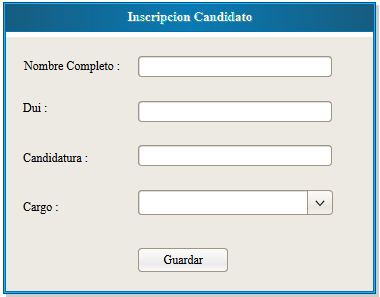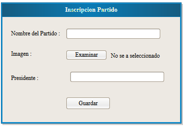 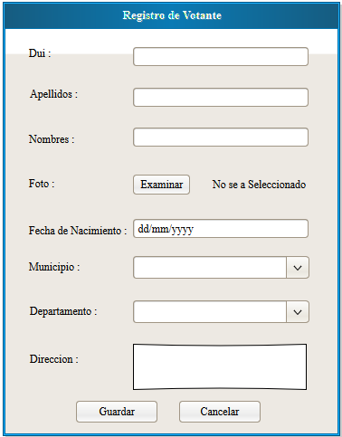 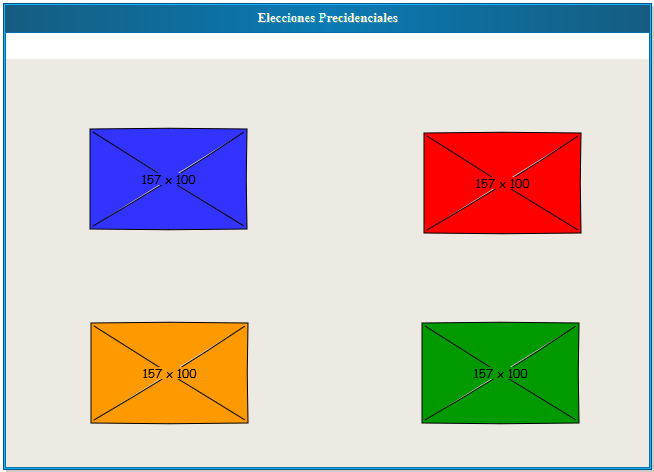 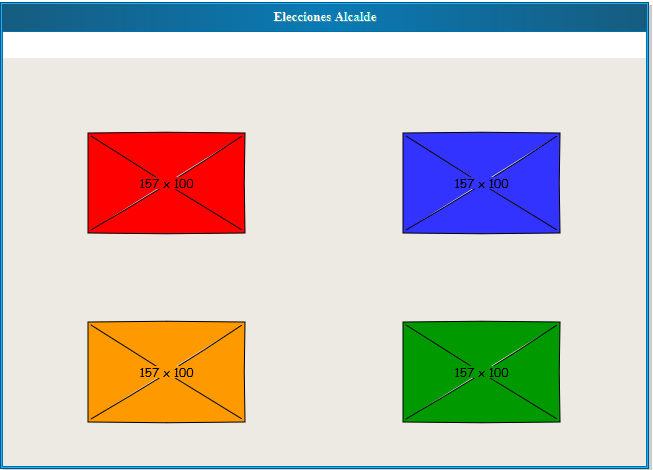 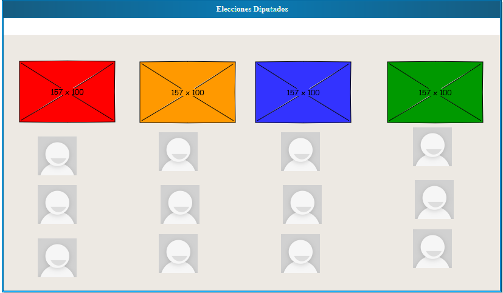
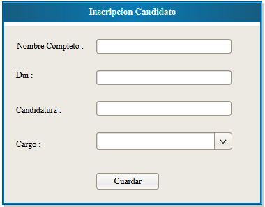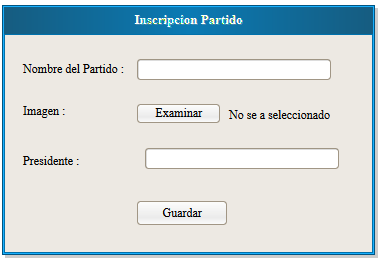 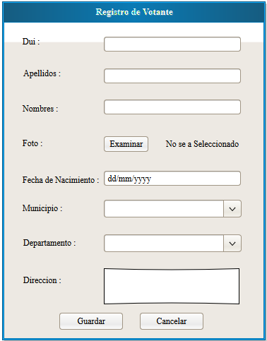 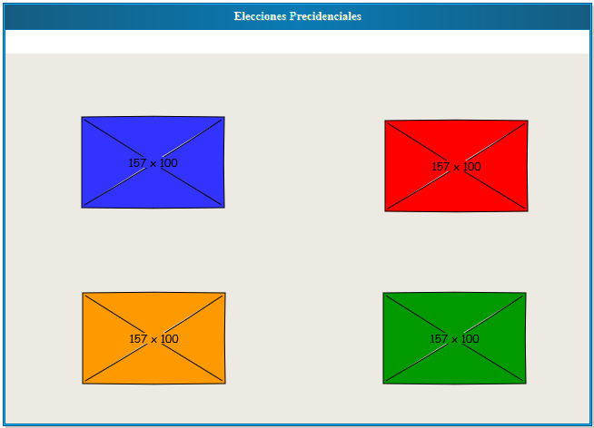 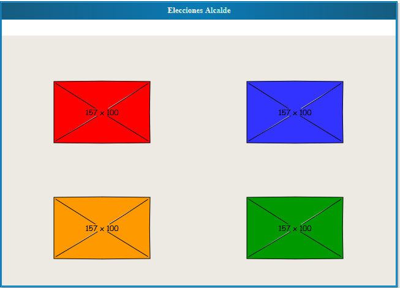 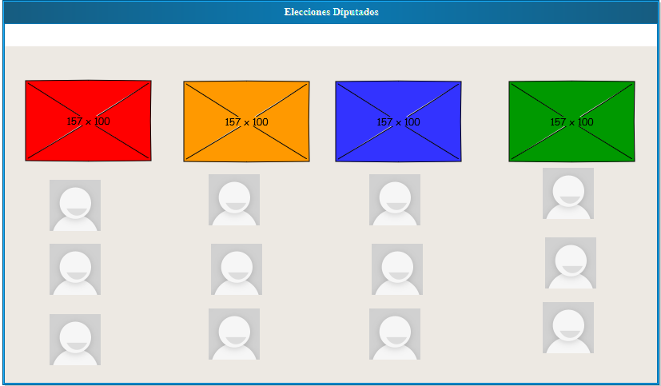